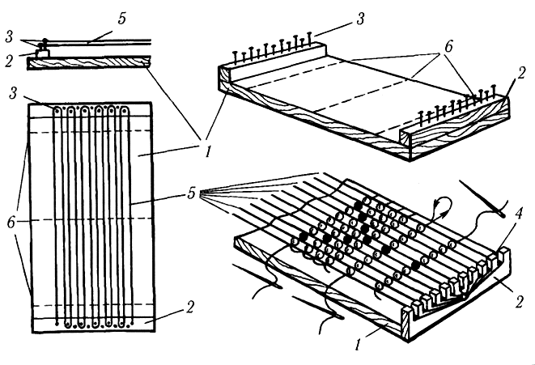
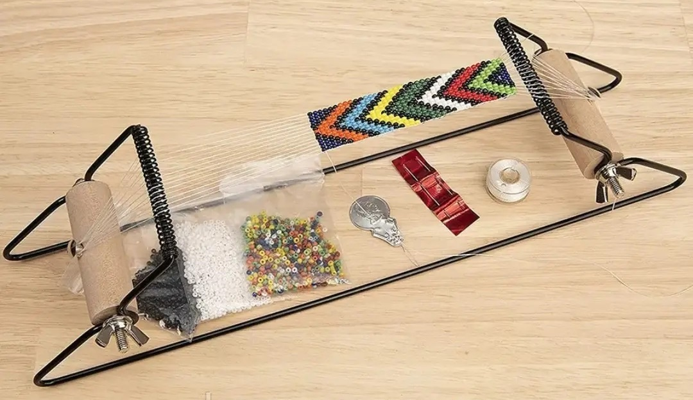
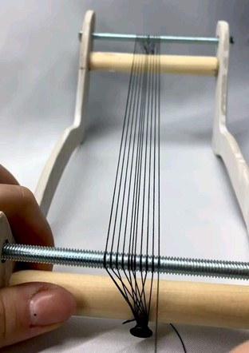
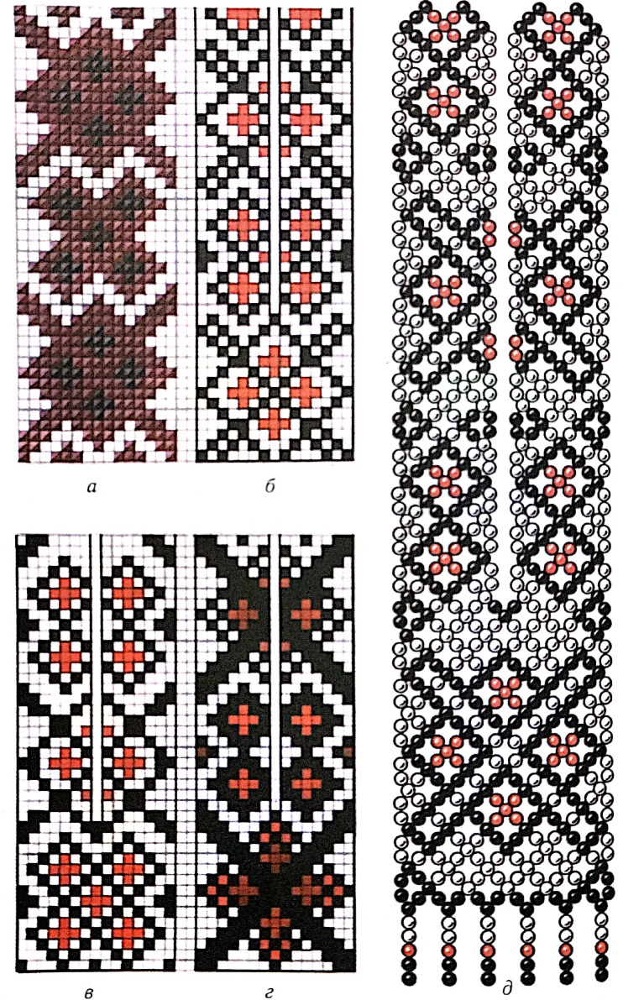

ЛАБОРАТОРНО-ПРАКТИЧНА РОБОТА
Тема: «Виготовлення українського ґердана»
Мета: формування вмінь ткання виробів з бісеру на верстаті, виховувати повагу та любов до традицій українського народу, естетичний смак.
Матеріали та інструменти: міліметровий папір, кольорові олівці, зразки ґердан.
Порядок виконання роботи:
- Ознайомитись з теоретичними відомостями роботи.
- Виконати завдання практичної роботи.
Теоретичні відомості:
Верстат – пристрій для виготовлення прикрас способом ткання (мал. 31а,б). Для нього потрібна дошка завтовшки до 1 см, завширшки 6-10 см і завдовжки 60 см для коротких виробів та 140-150 см – довгих. На нижньому кінці дошки набивають поріжки 2 із дерев’яних рейок завширшки 1,5-2,0 см і заввишки 2-5 см. На поріжках в один чи два ряди, на відстані 2-5 мм один від одного, забивають маленькі цвяшки 3,щоб закріплювати нитки основи, або роблять прорізи 4.Ниток основи 5 має бути на одну більше, ніж бісеринок на узорі (по ширині).

а

б
Мал. 31. а – саморобний верстат для ткання бісером;
б – магазинний верстат для ткання бісером.
Натягувати нитки треба не дуже туго, щоб вони не стягували готовий виріб і не морщили його (мал. 31в).

в
Мал. 31. в – закріплення ниток на верстаті для ткання бісером
Закріплення нитки.Нитку, на яку набирають бісеринки і нижуть виріб, називають робочою.Бісеринку, в якій схрещуються робочі нитки, називають зв’язкою.Такі бісеринки мають бути з великим отвором, щоб можна було протягувати голку з ниткою 2-3 рази, щоб утворилася кулька. Нанизуючи бісеринки на капронову нитку, її кінець припалюють сірником, щоб утворилася кулька. Набираючи бісеринки на бавовняну нитку, залишають кінець 5-6 см, а закінчивши нитку, закріплюють кінець, протягуючи його голкою або нитковдівачем крізь отвори кількох раніше нанизаних бісеринок. Кінчик бавовняної нитки акуратно зрізують ножицями, а капронової – обережно припалюють сірником. Щоб подовжити робочу нитку, кінець нової нитки протягують крізь кілька раніше нанизаних бісеринок. Закріплюють його одним-двома вузликами між намистинками і продовжують роботу.
Для нанизування крупного бісеру використовують товсті (№ 10, 20) та тонкі (№ 50, 60) бавовняні нитки. Товсту нитку для роботи без голок беруть одинарну, а тонкі – бавовняні та капронові – краще скласти вдвоє.
Під час нанизування розпочату роботу завжди тримають у лівій руці, а пальцями правої ведуть робочу нитку. Намистинки мають щільно прилягати одна до одної, а не провисати на нитках. Аби виріб був красивої форми, для роботи потрібно добирати бісеринки однакового розміру й точно за рахунком, відповідно до узору. Проте не слід занадто затягувати нитку, щоб виріб не морщився.

Мал. 32. Види орнаментів для ґердану.
Практична робота
1. Відміряти необхідну довжину та кількість ниток для ґердана.
2. Закріпити нитки основи на верстаті.
3. Відповідно до орнаменту виготовляти ґердан технікою ткання.
Контрольні питання:
- Який папір використовують для створення орнаментів тканих ґердан?
- Яка існує особливість орнаменту медальйона та нагрудної частини?
- Яку кількість ниток основи необхідно взяти для ґердана?